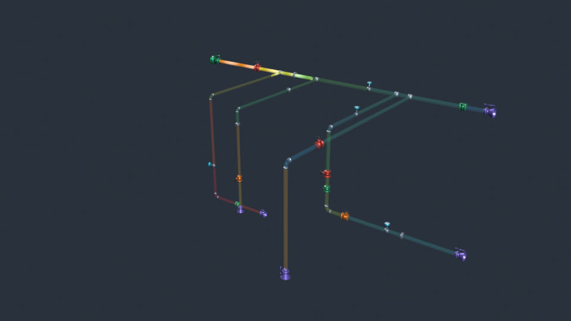
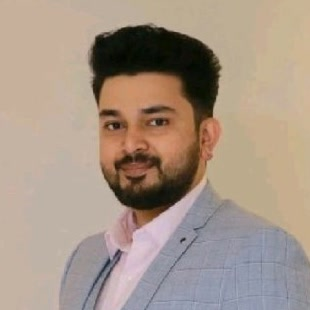
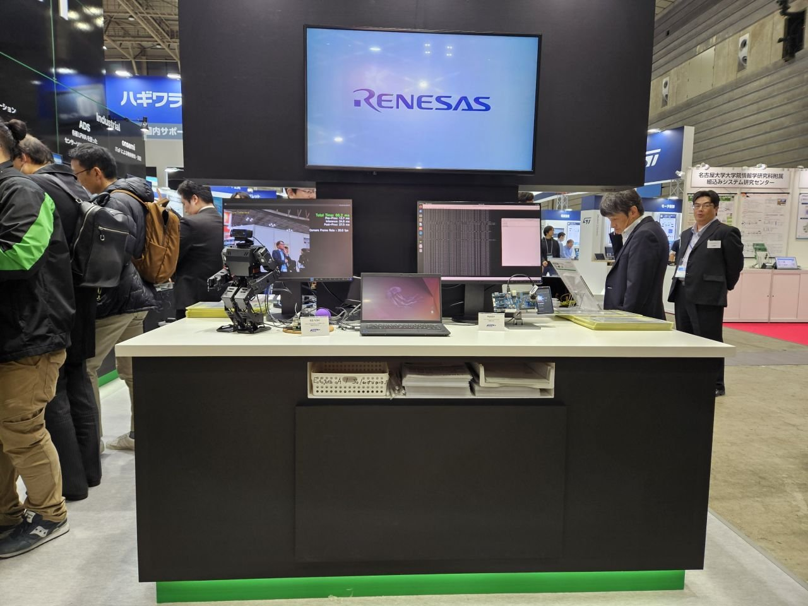
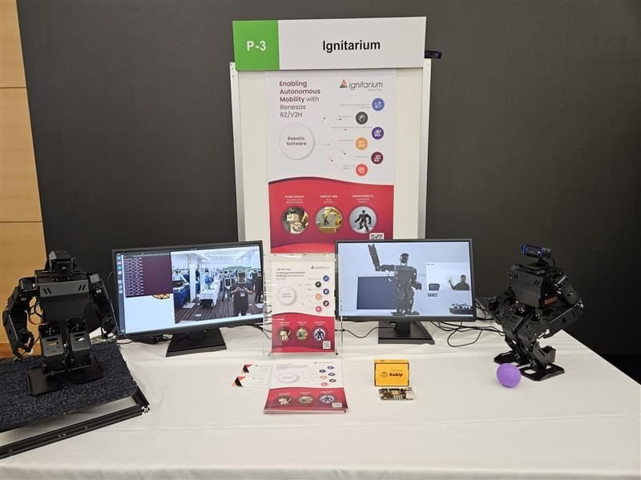
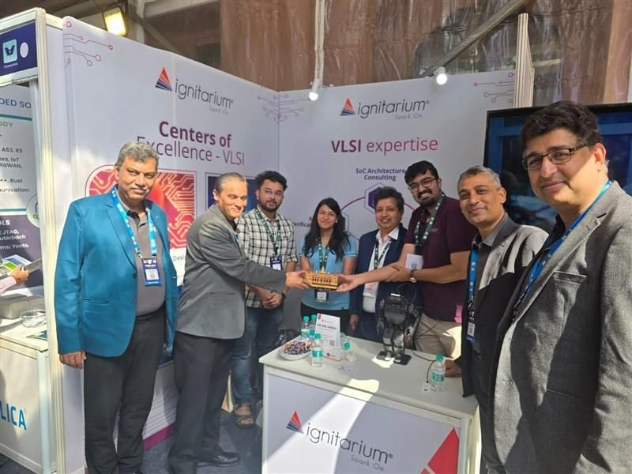
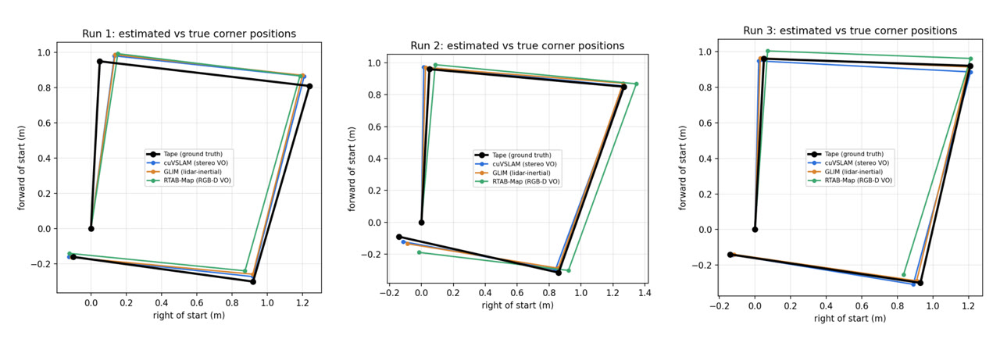
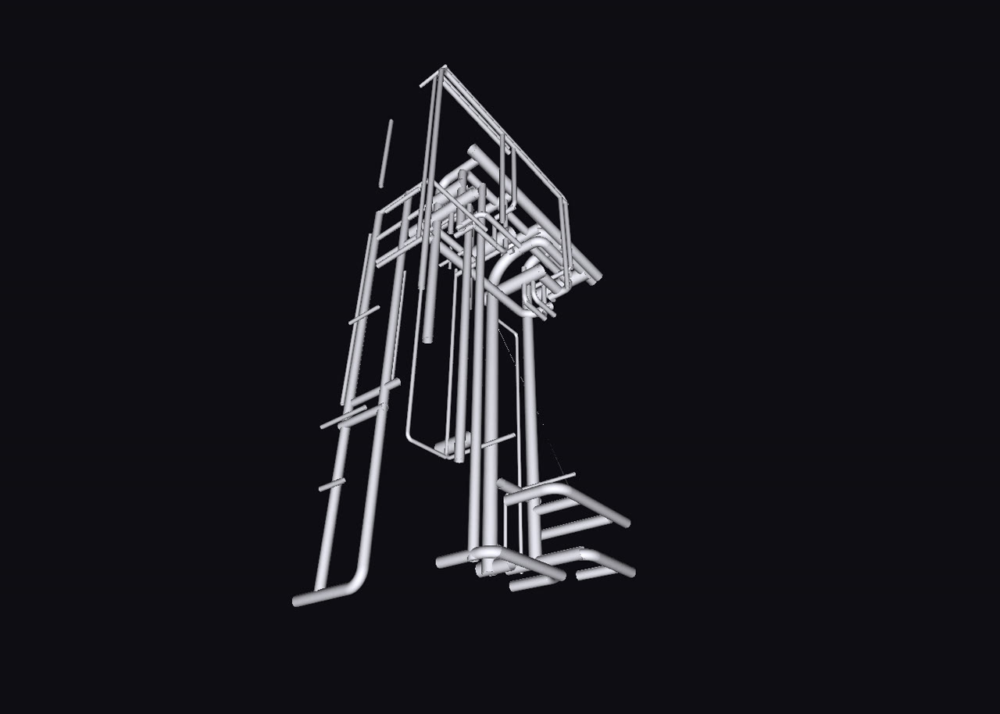
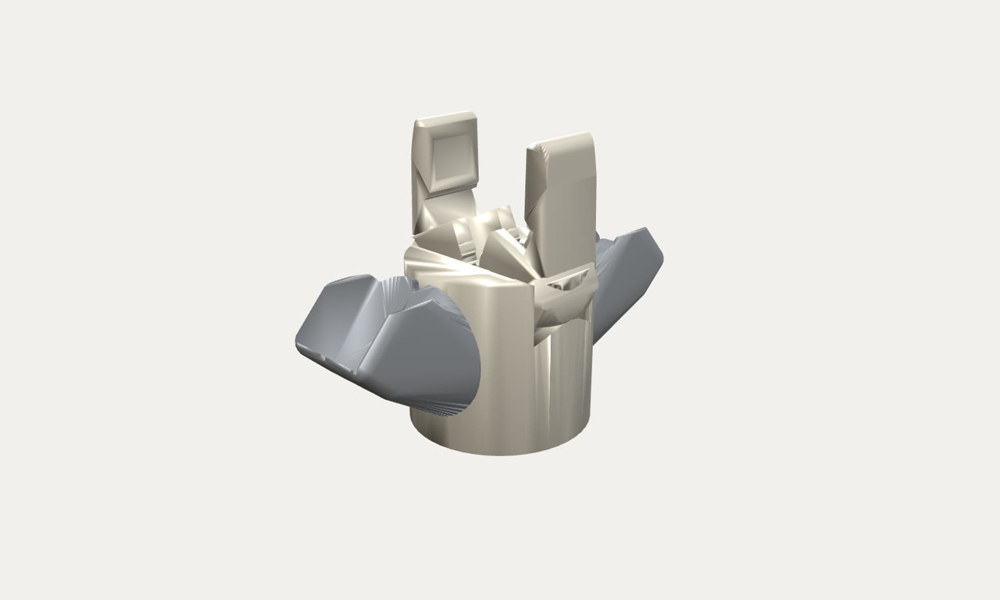

Piping digital twin
Turns a 3-million-point laser scan and a P&ID into a measured 3D model, 2D CAD views and EPANET hydraulics, in a 2D/3D what-if editor. It also works as a Blender add-on.

Christopher Jose · Senior Physical AI Engineer
For the past five years at Ignitarium, now part of Neurealm, in Kochi, I've built perception, SLAM and edge AI for humanoids, mobile robots and robot arms. I test every one of them in simulation before it meets the real world. This is how that work came together.
Scroll to begin
Chapter one · June 2021 – 2023
Every robot I've worked on starts with the same question: what is in front of me, and where exactly is it?
I joined Ignitarium as an intern in June 2021 and moved to a full-time AI Engineer role that November. My first projects were pure vision: spotting defects on printed circuit boards, a driver-monitoring system that watches for drowsiness and distraction, and a camera that finds faces and follows them.
Then the vision had to reach into 3D. A proof of concept with an Intel RealSense and GraspNet showed a robot where to grip. For a client, I built a full pick-and-place pipeline: YOLOv8 finds the part, SAM segments it, Template Pose estimates its 6D pose, and my own 3D reconstruction suite, built on RANSAC and ICP, rebuilds it from depth cameras like the Mech-Eye Nano.
Detect it, segment it, estimate its pose, rebuild it in 3D. Everything I've built since rests on those four steps.
I wrote about part of it too: "In the Pursuit of Finding Depth", a two-part explainer on how a single camera can learn to estimate depth.
Chapter two · Navigation
Once a robot can see, it has to know where it is, and get somewhere without hitting anything.
I built a robot vacuum on ROS 2 that maps a home with 2D LiDAR SLAM and spots obstacles with object detection, all running on the customer's own single-board computer. Outdoors, I worked on a delivery robot that maps its surroundings with 3D LiDAR SLAM, and benchmarked FAST-LIO2, Faster-LIO and LIMO-Velo to choose the right mapping engine.
Then the two halves met. On a Renesas R-Car V4H, I put a robot arm on a mobile base: it maps the floor with 2D LiDAR SLAM, drives itself to the pick location, picks the object with AI-accelerated detection and drops it off at the target.
Not everything was software. For a robot-arm client I designed the gripper in 3D and built its actuation mechanism and electronics myself.
Chapter three · 2024 – 2025
Seeing is only half of it. The real test is a robot that balances, walks and responds to the person in front of it.
On a small humanoid, I built gait control, hand-gesture actions and vision-based balancing that run on the Renesas RZ/V2H edge chip, with no cloud and no workstation. Face detection, object detection and obstacle avoidance run on the chip's DRP-AI accelerator. To keep it steady, I used ORB-SLAM2 camera pose as a balance signal, which corrects the drift an IMU alone suffers. I also trained walking policies with reinforcement learning (PPO) in Isaac Gym, then worked through the kinematics, joint limits and actuation needed to carry them over to the real robot.
On the road
Then we took the humanoids out of the lab and in front of people. In Yokohama, Japan, we showed them at EdgeTech+ 2024, a three-day show run by the Japan Embedded Systems Technology Association, and at Renesas AI Tech Day, doing real-time perception, navigation and interaction on the edge chip. Back home in Bengaluru, at VLSID 2025, the humanoid responded live to hand gestures from visitors.



An arm of its own
The same edge-first thinking went into a robot arm I built. I moved a collaborative arm off its original Raspberry Pi so it runs on the RZ/V2H EVK, with ROS 2 Humble and MoveIt planning its motion and controlling the motors on the board. From a PC on the same network you can see the arm and move it. Renesas features it on its RZ/V AI partner community page as a starting point for robot-arm projects on the chip, and the code is open source.
Chapter four · In the air
The same edge chip that balances a humanoid can fly a drone.
For search and rescue, I built a drone around the Renesas RZ/V2H on a Kakip board. A PX4 flight controller keeps it in the air; ROS 2 on the Kakip handles teleoperation and takes GPS waypoints from a base station; and a YOLOX and MobileNet-SSD person detector, accelerated on DRP-AI, reports anyone it finds over a cellular link. A second drone, a custom Holybro build on a Qualcomm RB3 Gen 2, flies over rail yards, picks out each track and flags defective sleepers from above.
Indoors there is no GPS, so a third drone had to map its own way. For warehouse inventory, it pairs a Pixhawk running ArduPilot with a Raspberry Pi 5, and localises with RTAB-Map on a RealSense camera, a TF Mini Plus LiDAR and optical flow. MAVROS links ROS 2 to the flight controller, so the drone can take off, follow waypoints down the aisles, scan QR-coded stock and land safely. The whole stack ships in Docker, so every drone in a fleet runs the same software.
Chapter five · 2025
Hardware is slow to change and expensive to break. So I started building the world before building the robot.
In NVIDIA Isaac Sim I built a digital twin of a 0.40 m warehouse robot and gave it a hard target: drive through 18-inch (45.7 cm) aisles, with only 2.86 cm to spare on each side. It uses only what the real robot would have: a RealSense D455's stereo cameras and IMU, plus wheel odometry, fused through cuVSLAM, nvblox and Nav2. The simulator's ground truth is used only to score each run.
The same approach scaled up to whole buildings. For an airport baggage hall, I simulated a crowd and filmed it with four ceiling cameras. DeepStream gives each person one ID across every camera, a live dashboard tracks occupancy, dwell and intrusion, and a vision-language model (Cosmos Reason) confirms incidents like a fall or an unattended bag.
Chapter six · 2025 – today
A twin is only worth something if the real robot behaves the same way.
I brought up the physical robot on an NVIDIA Jetson Orin with the same stack: visual SLAM, a 3D lidar, an EKF and Nav2. To choose the right SLAM back-end I compared cuVSLAM, CudaSift and GLIM against taped ground truth on the floor. I wrote calibration tools for the IMU and cameras. I also patched the Ouster lidar driver so the sensor can sleep when it isn't needed, saving about 15 W of the robot's battery.

Interlude
Some problems need a tool before they need a robot. These are a few I built along the way.

Turns a 3-million-point laser scan and a P&ID into a measured 3D model, 2D CAD views and EPANET hydraulics, in a 2D/3D what-if editor. It also works as a Blender add-on.

Fits parametric CAD models to LiDAR scans using slab slicing and RANSAC circle fits. An MCP server lets an LLM run the fit and an OpenFOAM flow simulation.

A two-finger claw for payloads up to 2.5 kg, made from two printed parts and one servo, with meshing gears. It comes with a URDF for simulation and VLA training.
A VS Code extension that deploys Isaac Sim to a cloud GPU in one click, using SSH and Docker Compose. It replaced a hand-run control panel.
Several of these were built for clients, so their code is private. All media comes from my own simulation runs and renders.
The path so far
Ignitarium is now part of Neurealm, and the work carries on there. I lead projects on humanoids, mobile robots, drones and robot arms on edge AI platforms, and build the Isaac Sim digital twins that test them.
Detection, segmentation, pose estimation and 3D reconstruction, plus my first ROS robots.
Where the story starts.
Rajagiri School of Engineering & Technology
Vellore Institute of Technology
DeepLearning.AI, 2024 · plus Electricity & Electronics: Robotics (Udemy, 2017)
Research Journal of Pharmacy and Technology
A two-part blog on monocular depth estimation, plus an internal ROS 2 curriculum and a Docker introduction for colleagues.
YOLO, SAM, MegaPose, 3D reconstruction, NeRF, vision-language models, DeepStream
ROS / ROS 2, Nav2, SLAM, cuVSLAM, nvblox, Isaac Sim, Isaac Gym, URDF
Renesas RZ/V2H & RZ/V2L, Jetson Orin, TI Jacinto, Raspberry Pi, Yocto, embedded Linux
Python, C++, Embedded C, TypeScript, Docker, Blender, OpenSCAD, FreeCAD
Epilogue
If you're building robots, digital twins or machines that need to see, I'd love to hear what you're working on.
chrisjzacharias@hotmail.co.uk